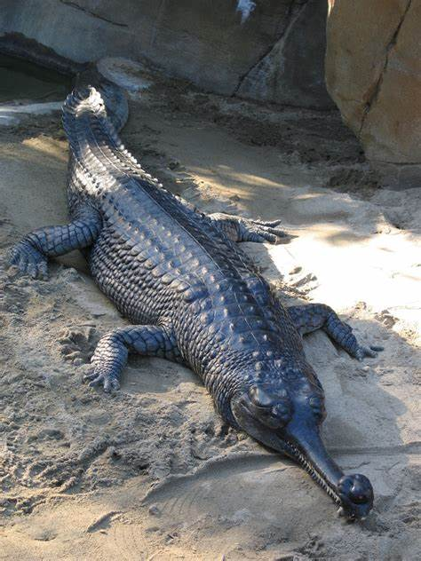

Gavial (Gavialis gangeticus)

es una especie de pequeña distribución, al encontrarse principalmente en ríos de Pakistán, India y Nepal, dentro de los sistemas fluviales del Indo, el Ganges y el Mahanadi. El hábitat del gavial son los cuerpos de agua dulces, es decir, es básicamente un animal de agua dulce, y se halla en mayor proporción en ríos de rápido movimiento. es una especie carnívora. En su etapa madura su dieta se compone principalmente de peces, pero los individuos jóvenes se alimentan de muchos animales invertebrados, como los crustáceos, además de ranas y renacuajos.
Es una especie generalmente social que gusta de convivir con sus congéneres. Sus relaciones son tranquilas y pacíficas, salvo durante la época de reproducción, en la que puede ocurrir algunos enfrentamientos entre los machos al tornarse estos más territoriales e intolerantes ante los intrusos.